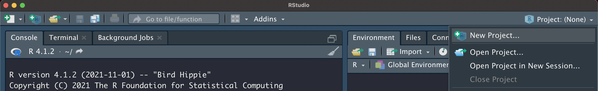
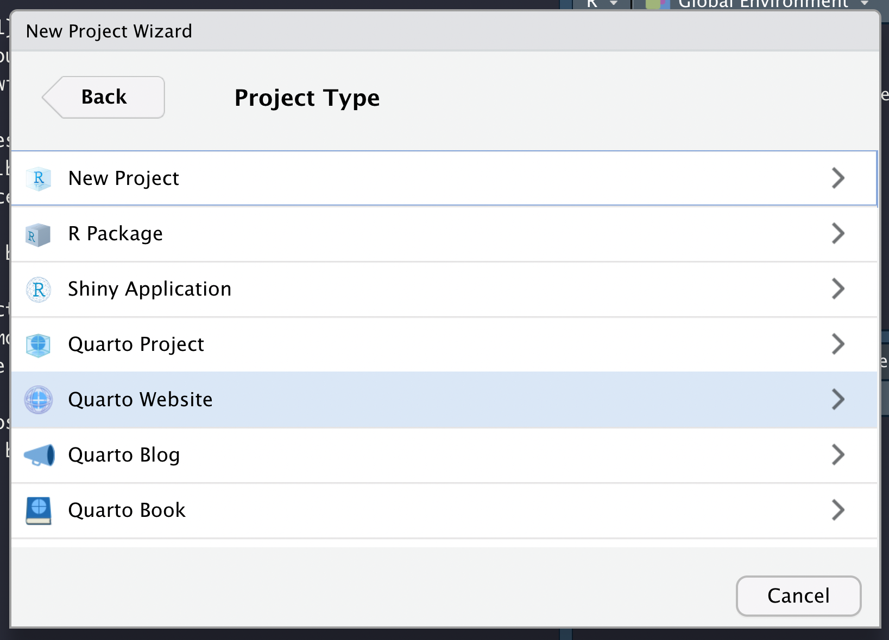
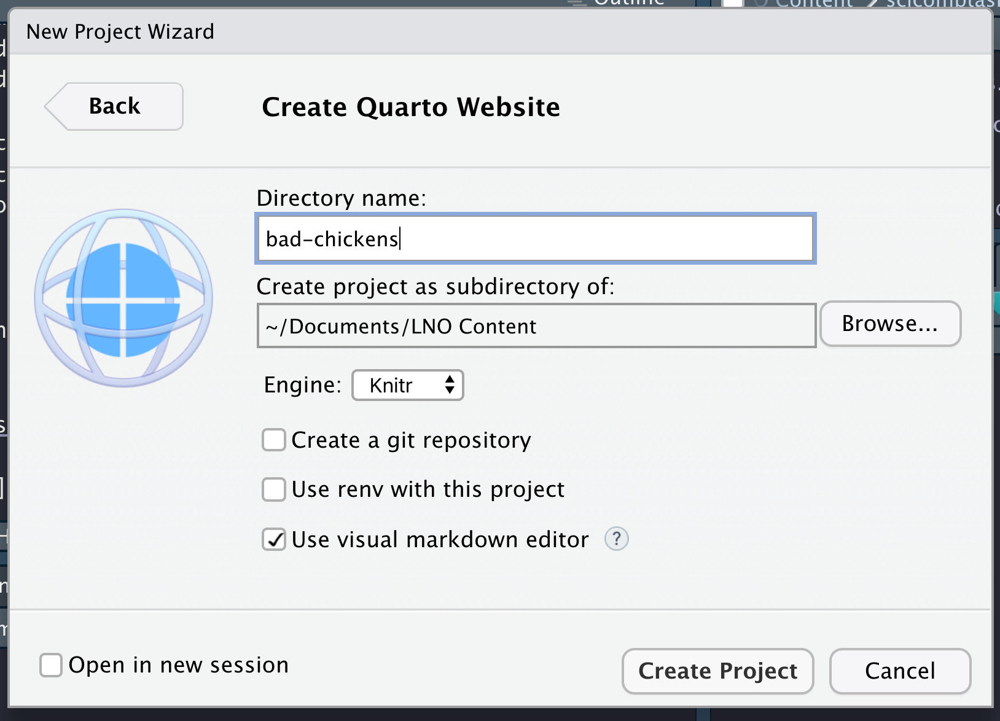
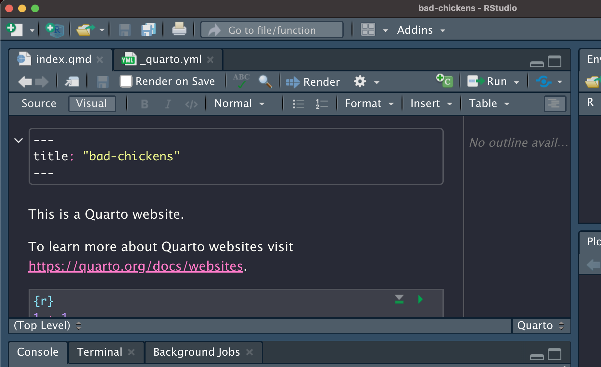

# code chunk(s) here!!
# NO PICSTutorials
Some of the content that we produce is not as detailed as our full workshops but has a wider scope than the content included in our “Best Practices” suggestions. This information can broadly be defined as “tutorials” though their depth and scope can vary significantly depending on the topic being tutorialized. As with our Best Practices, this page is under constant development so please post an issue if you have an idea for a tutorial that you’d like to suggest that we create.
Building a Website with Quarto
Quarto is a new tool developed by RStudio (the company, not the program) to create a more ‘what you see is what you get’ editor for creating markdown files and products (e.g., books, websites, etc.). Additionally, it includes a visual editor that allows users to insert headings and embed figures via buttons that are intuitively labeled rather than through somewhat arcane HTML text or symbols. While Quarto is still in its infancy, it is rapidly gathering a following due to the aforementioned visual editor and for the ease with which quarto documents and websites can be created.
Prerequisites
To follow along with this tutorial you will need to take the following steps:
Feel free to skip any steps that you have already completed!
Create a New R Project
To begin, click the “Project” button in the top right of your RStudio session.

In the resulting dialogue, click the “New Directory” option.
From the list of options for project templates, select “Quarto Website”.

Pick a title and check the “Create a git repository” checkbox. For your title, short but descriptive titles are most effective. Once that is done, click “Create Project” in the bottom right of the window.

After a few seconds, RStudio should refresh with a Quarto document (such documents have the file extension “.qmd”) and a “_quarto.yml” file open.

Part of Quarto’s central philosophy is that all of the formatting of individual .qmd files in a project is governed by the settings created by a singular .yml file. In an R markdown project some of the global settings are set in .yml but other settings are handled within each .Rmd file. This centralization is a key innovation in streamlining projects and is one reason for Quarto’s quick popularity.
Make a New GitHub Repository
Adding your Project to GitHub
Preparing Project for Web Deployment
Changing output-dir
Plus touch .nojekyll in Terminal
Deploy Website via GitHub
GitHub Housekeeping
Adding Content
RAW CONTENT BELOW (vvv)
Open up RStudio and go to File -> New Project -> New Directory -> Simple R Markdown Website and then fill in the following boxes to name and save your website source code wherever you would like.
After you click “Create Project”, you should see three files in your RStudio window: _site.yml, about.Rmd, and index.Rmd. The idea is that each R Markdown (.Rmd) file will be a “page” in our website, and the .yml file will contain instructions on how to combine these pages together.
index.Rmd: This demo R Markdown file will be our website’s “home” page.about.Rmd: This demo R Markdown file will be our website’s “about” page._site.yml: This a configuration file: We’ll use this to change how our website looks;Note: When building a website, R Markdown only looks for the files
index.Rmdand_site.yml. So change the contents of these files however you like, but don’t change the name! On the other hand, feel free the change the name ofabout.Rmdto whatever you’d like!
To build the demo website, we can go to the Build Pane on RStudio (typically in the top right) and press “Build Website”. Alternatively, we can run the command rmarkdown::render_site() in the console.
This will create a new folder called _site in the working directory with our website! To see what it looks like, go into the new _site folder and open up either the index.html or the about.html file in your web browser. Clicking on the “Home” tab, you should see something like this:
Now that we have an idea of how the demo works, let’s start personalizing it!
Updating the website
Changing output directory
First of all, the folder where our website lives was called _site. We can change this name to be anything, but let’s keep it simple and call it docs: Go into our _site.yml file and add in output_dir: "docs" underneath the name of the project.
Now we can build the website again (either clicking “Build Website” or running rmarkdown::render_site()) and notice that we made a folder called docs instead of _site! We can even safely delete the old _site folder, since our website will now always be built and updated into the docs folder.
Adding a page to the website:
Create an R Markdown file (you can name it whatever you want, but ours is called practice.Rmd) containing all of the information you want in that page. Make sure that you have output: html_document in the header!
Once your page is all filled up, go into the _site.yml file and add the following underneath the other pages:
text: "<page name to be displayed>"href: <name of rmd file you just made>.html
For example,
Then if we build our website again, we can see our new page!
Additional Features
If you want to get fancy with styling the website, it helps to know some HTML or CSS. Here are a few examples of some of the things you can do:
Apply a theme
To apply an HTML/CSS change to every page of your website, we can add an output section to our _site.yml file.
For example, to change the theme of our website to Bootswatch’s “flatly” theme, we can apply like it like so:
Let’s see what our website looks like now!
You can see more bootswatch themes here.